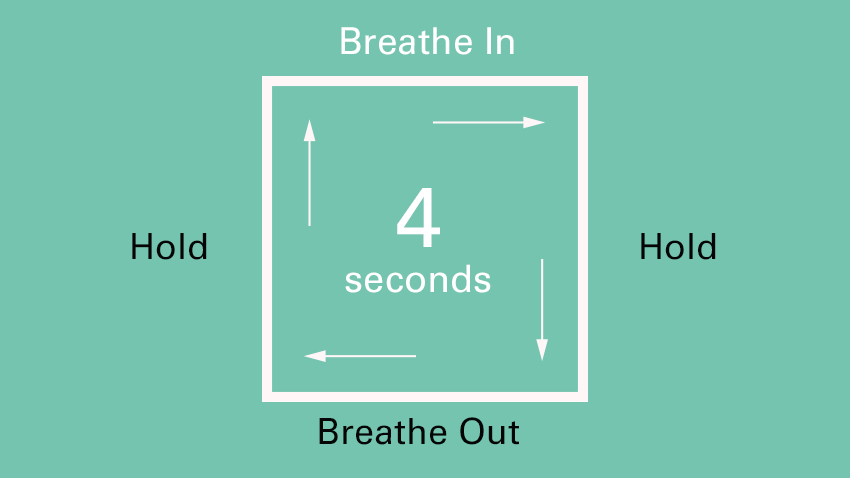

Mental Health in College and Beyond
Your mental health plays perhaps the biggest role in your development as an individual. It can also be essential part of your academic success, because a healthy mind will perform twenty times better in and out of the classroom. The three most basic keys to a healthy mind are:
Mindfulness
It is the state of mind most representative of our true being- its an inner stillness that results in the heightening of our consciousness and in turn our senses. In every individual's mind there is a voice that thinks, judges, and anticipates; it often controls our emotions and actions, but mindfulness is to quite that voice. What remains is a heighten state of awareness and peace. By taking time out of the day to practicing mindfulness, we can create a new state of mind that is much more focused, stable, and happy overall.
One of the most common forms of practicing mindfulness is meditation- and to some individuals the word can be a bit off-putting from stereotypical images of monks sitting with their legs crossed while making chants. In reality there is a huge variety of methods of meditating to choose from, because it's really just practicing mindfulness. A suggestion for those who are new to mediation is to use a simple breathing technique while trying to "turn off" the thoughts running through the mind. The breathing technique is known as box breathing, and it's simply breathing in four parts: In, Hold, Out, Hold. Each part is done in four seconds, and the parts resemble a box, with each part representing a side.
By practicing mindfulness and incorporating it into our daily routine, we can see drastic changes in our school performance. You might find it easy to be fully focused in the classroom, and in turn you will probably see a boost in your grades!
Destress
Just as mindfulness can be thought of as a way of gaining positive energy, destressing is the act of getting rid of negative energy. It could be a new practice, such as a breathing technique, or something very simple and enjoyable, such as taking a bath. In college, its important to remember to take some time to destress after a long day or week of assignments and/or other work. If are able to perform well and be very productive for some time but you do not destress, you risk becoming fatigued and losing your will. Destressing is the second basic key to a healthy mind, and there are countless ways an individual can practice destressing.
Here are just a few destressing ideas:
Take a walk • Eat a snack • Take a nap • Take a hot/cold shower • Listen to music • Stretch your muscles • Call a loved one • Meditate • Lay down and do nothing • Turn off the phone • Drink some tea • Exercise • Pet your dog/cat • Breathe • Browse the Internet • Clean your Room • Write in a Journal • Participate in a hobbie • etc. etc.
Sleep
Your parents weren't wrong, sleep is crucial to your mental and physical health. In college it can be easy to fall into a bad habit of unhealthy sleeping, and it can hurt your mental health and in turn your academics. Sleep deprivation is very common at this age, in fact, you may be sleep deprived right now and not even realize it. Healthy sleep is determined by the amount of hours you sleep as well as the consistency in the time of the day you are actually sleeping.
It is recommended that young adults sleep between 7 and 9 hours a day, because oversleeping can be just as harmful as undersleeping. Also what's nearly equally as important as getting the right amount of sleep, is going to bed and waking up at the same time every day. This is known as a sleep cycle, and keeping a strong sleep cycle will boost your overall performance and wellness.
A common mistake that students make is spending hours into the night studying for an exam, when they could be getting a full night's rest. As long as that individual has not crammed their studying into that small window of the night before, it is always better to get a good night's sleep before an exam.